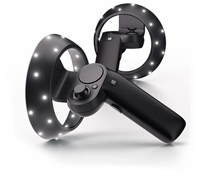

Windows Mixed Reality motion controllers allow users to interact in Mixed Reality applications, allowing precise, low latency tracking of movement within the field of view (FOV) of their Windows Mixed RealityA mixed reality platform developed by Microsoft, built around the API of Windows 10. More info
See in Glossary headset. This is achieved using the sensors built into the headset.
To allow native Unity Editor support for Windows Mixed Reality input hardware, the Unity VR subsystem presents three inputs as separate joysticks. Use the UnityEngine.Input class to read the axis and button values of these inputs.
When properly configured and connected to your computer, the motion controllers appear in the list returned by UnityEngine.Input.GetJoystickNames() as Spatial Controller - Left and Spatial Controller - Right. For information on correctly configuring and connecting the motion controllers, see the Windows Developer Center documentation.
In Unity you can check the availability of the controllers through script by periodically checking for their presence in the list of joystick names. When the controllers are turned off, or their batteries are removed, an empty string replaces their name in the list returned by UnityEngine.Input.GetJoystickNames(). When the controllers are turned back on, their name re-appears in the list.
The image below shows the buttons available on your Windows Mixed Reality controller.
The table below shows the interaction types, button IDs, axis and value ranges for each input provided by the controller in Unity.
| Hardware Feature | Interaction Type | Unity Button ID | Unity Axis ID | Unity Axis Value Range |
|---|---|---|---|---|
| Touchpad | Touch | Left: 18 Right: 19 |
- | - |
| Touchpad | Press | Left: 16 Right: 17 |
- | - |
| Touchpad | Horizontal Movement | - | Left: 17 Right: 19 |
–1.0 to 1.0 |
| Touchpad | Vertical Movement | - | Left: 18 Right: 20 |
–1.0 to 1.0 |
| Thumbstick | Press | Left: 8 Right: 9 |
- | - |
| Thumbstick | Horizontal Movement | - | Left: 1 Right: 4 |
–1.0 to 1.0 |
| Thumbstick | Vertical Movement | - | Left: 2 Right: 5 |
–1.0 to 1.0 |
| Select Trigger | Press | Left: 14 Right: 15 |
- | - |
| Select Trigger | Squeeze | - | Left: 9 Right: 10 |
0.0 to 1.0 |
| Grip button | Press | Left: 4 Right: 5 |
- | - |
| Grip button | Squeeze | - | Left: 11 Right: 12 |
0.0 and 1.0* |
| Menu button | Press | Left: 6 Right: 7 |
- | - |
Windows Mixed Reality controller input details for Unity
*The Grip squeeze axis is a binary control, so it only reports values of 0 or 1, with no values in between.
The table below lists the different axes available when using Window Mixed Reality controller inputs, along with the positive and negative directions for each axis.
| Axis | Positive Direction | Negative Direction |
|---|---|---|
| Horizontal | Left | Right |
| Vertical | Up | Down |
For more information on using the Windows MR motion controllers with Unity, visit the Windows Developer Center documentation on Motion Controllers in Unity.
2017–11–21 Page published with editorial review
New functionality in 2017.2
Did you find this page useful? Please give it a rating: